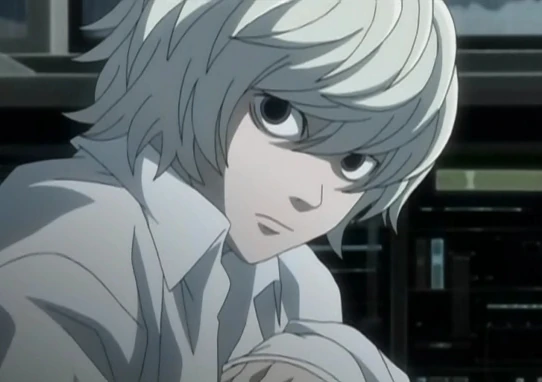

Near

El Sucesor de L
Near, cuyo verdadero nombre es Nate River, es uno de los sucesores de L y el principal antagonista de Light Yagami en la segunda parte de la serie. Es un joven prodigio criado en la Wammy's House, el orfanato para niños superdotados fundado por Watari.
Con una mente brillante y analítica, Near tiene un enfoque metódico para resolver casos. A diferencia de L, es más reservado emocionalmente y suele jugar con juguetes mientras piensa. Su objetivo es capturar a Kira y demostrar que es digno de ser el sucesor de L.
"No estoy interesado en ser el mejor. Solo quiero resolver el rompecabezas."
Características
- Nombre completo: Nate River
- Alias: Near, N
- Ocupación: Detective, Líder de la SPK
- Inteligencia: Excepcional
- Personalidad: Analítico, Reservado, Meticuloso